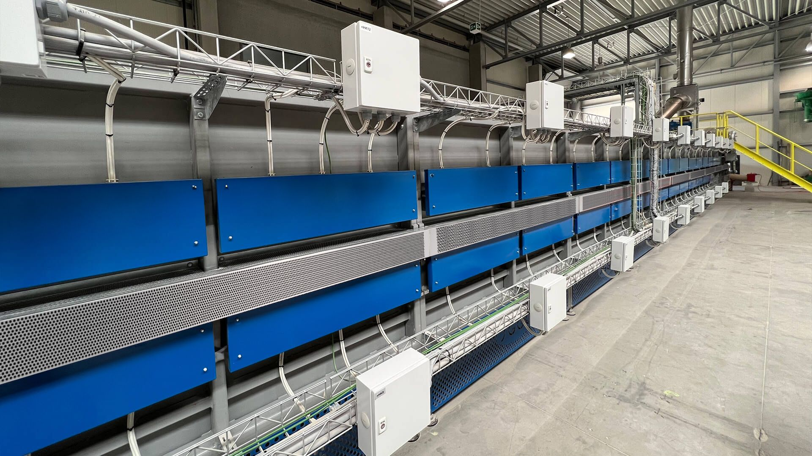

01 — ALTGLAS
01 — ALTGLASVorhandenes nutzen.
Altglas ist der Hauptbestandteil der Herstellung. Es wird sortiert und zur Weiterverarbeitung befördert.
 Projekt besprechen
Projekt besprechenPOLICELL IN KRUMMNUSSBAUM
Direkt an der Donau wird aus Altglas Schaumglasschotter. Ein Standort, an dem Materialwissen und Produktion zusammenkommen.

DAS UNTERNEHMEN
PoliCell GmbH & Co. KG produziert Schaumglasschotter in Krummnußbaum. Die vorhandene Erfahrung und die eingesetzte Anlagentechnik bilden die Grundlage des Herstellungsprozesses.
Die Produktion setzt laut Unternehmensangaben auf elektrische Energie aus ökologischen Quellen und verzichtet im Herstellungsprozess auf Gas.
Unsere MaterialgeschichteEIN BLICK IN DIE PRODUKTION
01 — ALTGLASAltglas ist der Hauptbestandteil der Herstellung. Es wird sortiert und zur Weiterverarbeitung befördert.

02 — VERARBEITUNGDer Ofen ist das Herzstück der Produktion. Nach dem Abkühlen liegt das fertige Schaumglasmaterial vor.
 03 — SCHAUMGLASSCHOTTER
03 — SCHAUMGLASSCHOTTERDas Material wird zur Abholung oder Lieferung vorbereitet — lose oder in Big Bags.
PERSÖNLICH ERREICHBAR
Technische Auskunft, Projektberatung, Bestellannahme und Logistik: Finden Sie die passende Ansprechperson für Ihr Vorhaben.
Das Team kennenlernenIHR PROJEKT BEGINNT MIT EINEM GESPRÄCH.
Materialwahl, technische Beratung oder Lieferung:
Wir freuen uns auf Ihr Vorhaben.